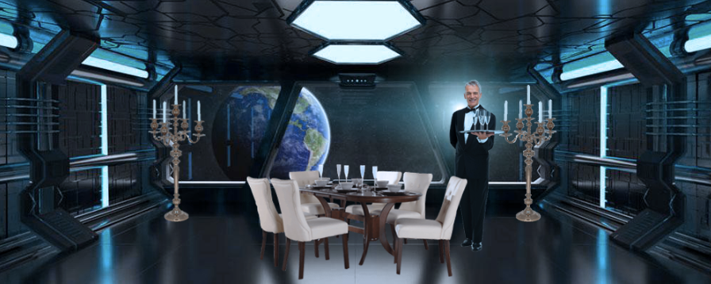
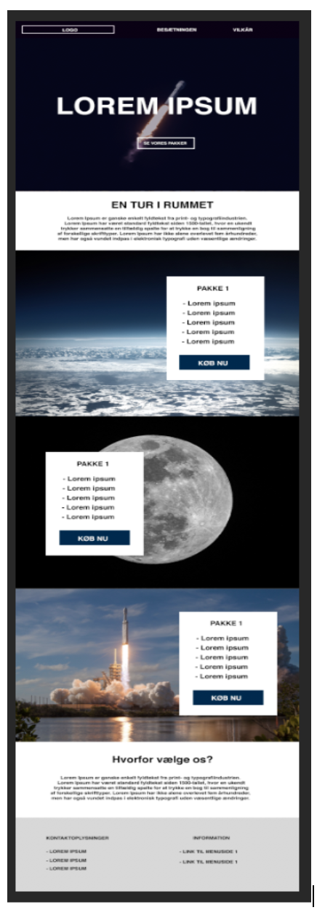
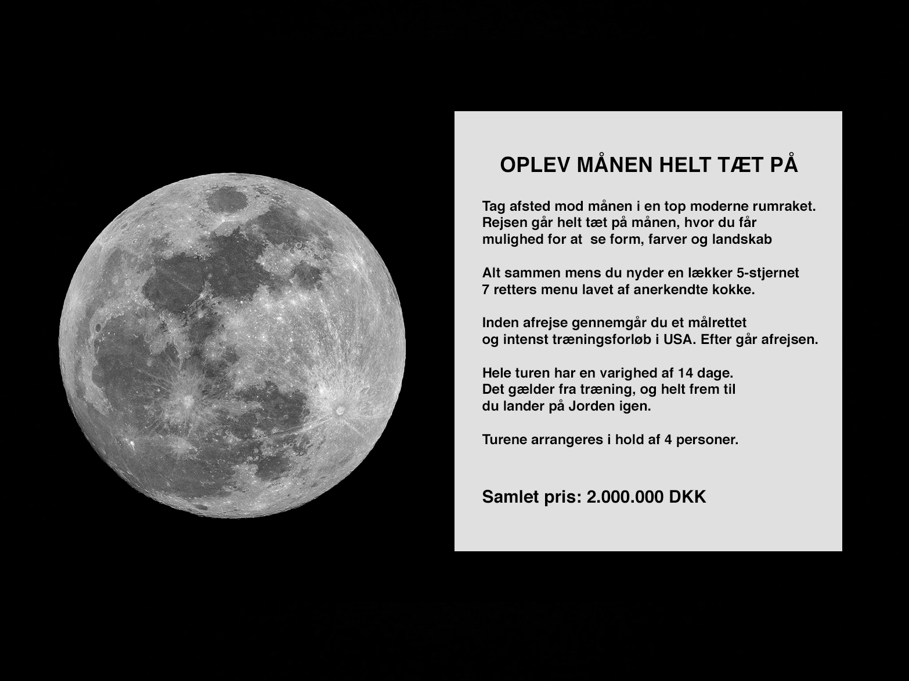

SPACETRAVEL
LUKSUSREJSER TIL MÅNEN
Projekt nummer 1 på uddannelsen til Multimediedesigner
Hvad gik opgaven ud på?
Efter en uges tid på uddannelsen, blev vi kastet ud i vores første projekt. Vi havde ikke for alvor haft undervisning i hverken HTML eller CSS, og derfor var føltes det som en større opgave. På en måde var det dog også fedt, fordi jeg lærer bedst ved at arbejde med og bruge de ting, som vi lærer.
I opgaven skulle vi udvikle et koncept og et website ift. salg af rejser ud i rummet. Blandt andet skulle vi lave nogle forskellige sketches, en hjemmeside i HTML & CSS, 1 billede med blikfang lavet i Photoshop, en konceptbeskrivelse samt en beskrivelse af budskabet for konceptet.
Vores løsning & tankerne bag
I min gruppe ville vi ikke lave en helt "almindelige" rumrejse, der blot gik ud til månen og tilbage. Vi ville gerne lave noget vildere. Derfor fandt vi på Spacetravel. Konceptet med Spacetravel var at udbyde rejser til månen, hvor man nyder en lækker 5-stjernet 7-retters menu undervejs. Det skulle være mere luksuriøst ift. blot at rejse til månen med en almindelig rumraket
Tanken var at lave en moderne løsning, hvor mulige kunder nemt kunne finde information omkring priser og selve rumrejsen. Vores tese var, at man ikke bestilte en rejse til 2.000.000 kroner online, så derfor lavede vi ikke online booking.
Her ses vores billede med blikfang, der blev lavet i Photoshop. Billedet skulle fortælle historien om vores koncept.
Ingen i gruppen havde for alvor erfaring med at kode, og derfor lykkedes det ikke så godt at få det eksklusive i konceptet med over på vores hjemmeside. Kva vores kompetencer i forhold til kodningen, havde vi lidt svært ved at få vores ført vores ellers gode tanker ud i livet.
SE DEN FÆRDIGE HJEMMESIDEHvad var min rolle i projektet?
Det 1. projekt på multimedieuddannelsen var lidt af et kaos i forhold til fordeling af opgaver, samarbejde og så videre. Vi gjorde det meget primitivtet og fordelte bare opgaverne ud fra Google Docs. Vi brugte ikke noget online projektstyringsværktøj som for eksempel Trello. Det betød, at man lige lavede det der manglede. Der var ingen klar plan fra start.
Jeg påtog mig rollen at udarbejde vores mockups for hjemmesiden, lavet ud fra vores skitser i hånden. Jeg lavede mockupet i Photoshop.
Det arbejde jeg lavede
I projektet lavede jeg vores mockup for forsiden. Den blev lavet i Photoshop. Jeg lavede også et billede af noget af det indhold, som vi skulle bruge på forsiden. Vi var ikke så skarpe til at kode i HTML & CSS på daværende tidspunkt, så derfor smed vi et billede ind på forsiden. I projektet var jeg også med inden over vores målgruppebeskrivelse, som er vidst længere nede.
Mockup lavet i Photoshop
Billede til forsiden
Målgruppebeskrivelse
Jeg var med til at lave vores målgruppebeskrivelse. Det er klart, at det er overklassen, der har råd til en tur i rummet. Vi valgte dog også at sætte en aldersbegrænsning på målgruppen, da det kræver nogle særlige fysiske forudsætninger at kunne tage en tur i rummet. Målgruppen beskrivelsen kan læses nedenfor.
"Vores målgruppe er privatpersoner der har råd til rumrejser, men med sans for det fine. I og med vores rumrejser koster 2.000.000 og er af den finere art, er vores målgruppe relativt snæver. Det er rige folk med en større formue og trang til aktion. Det er typen, der gerne vil opleve det de andre ikke oplever, typen der gerne vil kunne blære sig med at have været i rummet. Målgruppen er primært danskere, men det er ikke nødvendigvis alle, der bor i Danmark. Nogle kan være bosat i Marbella, Dubai, Californien og lignende. Herhjemme vil målgruppen nok primært være bosat omkring hovedstaden eller på store slotte/herregårde. Aldersgruppen er 25 - 55. Selvom der er mange rige over 55, så er det desværre ikke sundhedsmæssigt forsvarligt at sende dem op i rummet."
Hvilke erfaringer tager jeg med videre?
Efter det første projekt gjorde jeg mig en masse erfaringer. Først og fremmest opdagede jeg nogle af de funktioner Photoshop byder på. Blandt andet i forhold til at redigere farver på billeder, men også i forhold til at fritlægge. Nogle af tingene havde jeg stiftet bekendskab med før, men gennem undervisningen fik jeg nogle bedre teknikker - blandt andet i forhold til fritlægning
Efter det første projekt lærte jeg også, hvor vigtigt det er at bruge en eller anden form for værktøj til at administrere opgaverne. Det havde vi ikke, og det var meget forvirrende synes jeg. Jeg gjorde mig i projektet også de første erfaringer med FTP, og det med at lægge et website op.
SE DEN FÆRDIGE HJEMMESIDE